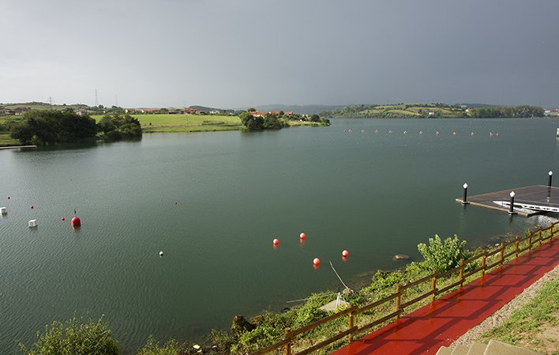
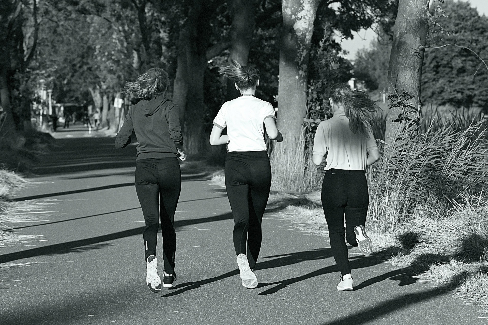
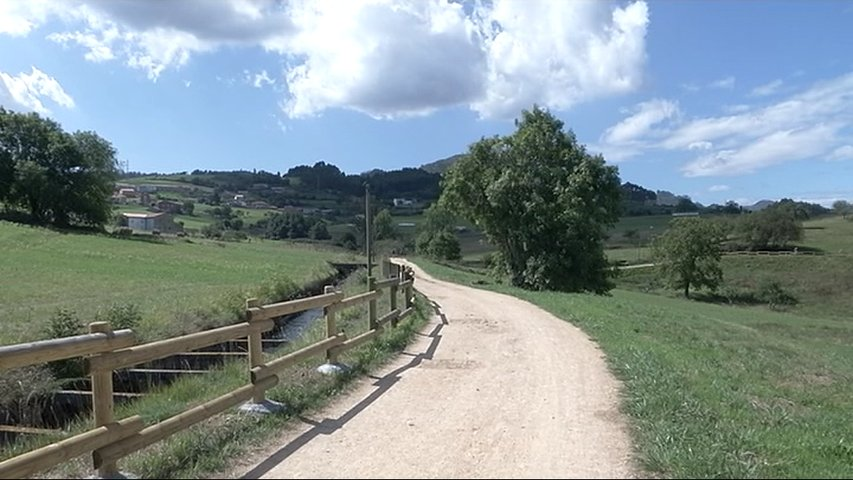
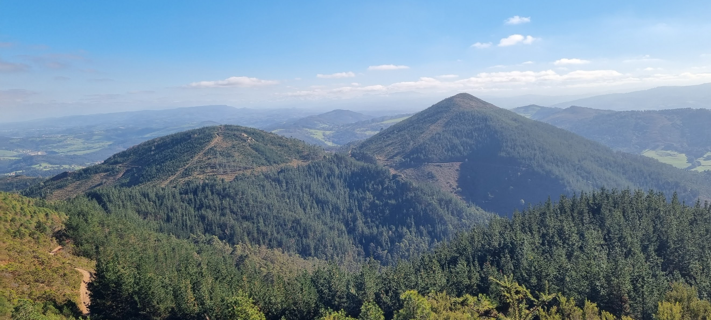
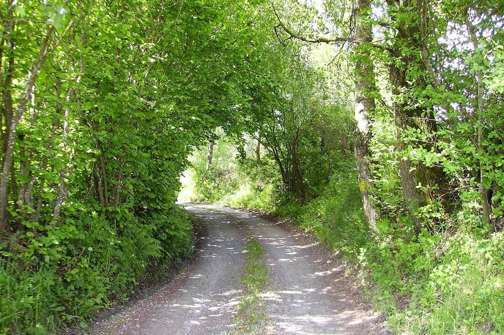
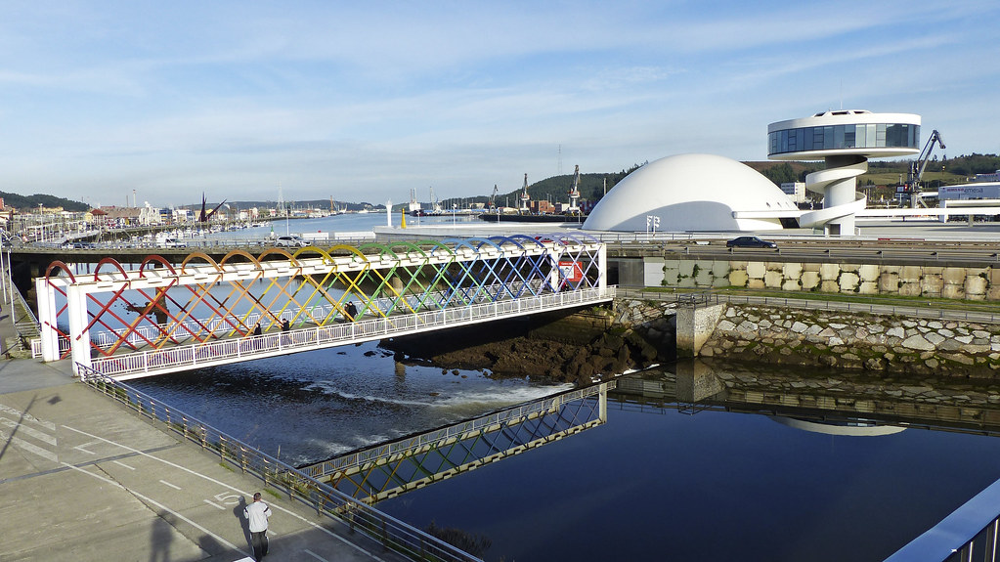
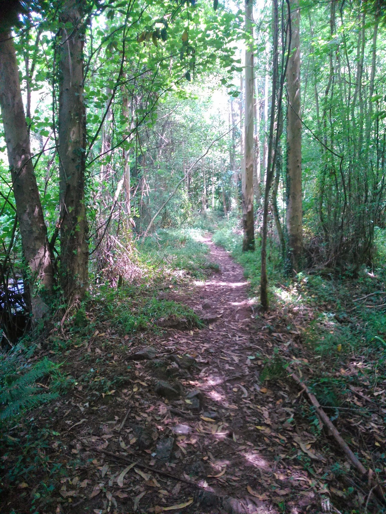

Corre conociendo Corvera y su entorno
Únete al club de running popular de Corvera de Asturias. Compartimos entrenamientos grupales, preparación para carrera populares y salidas de trail. ¿A qué estas esperando? ¡Únete a nuestra familia!

Descubre nuestras rutas

Ruta del Agua

Subida al Gorfolí

La Furta - Solís

Ría de Avilés y Niemeyer

Senda del Escañorio
Entrenamientos
Horario semanal
Martes | 18:00
Rodaje suave
Jueves | 20:00
Series
Viernes | 18:00
Rodaje suave
Sábado | 10:00
Tirada larga
Domingo | 10:00
Tirada larga